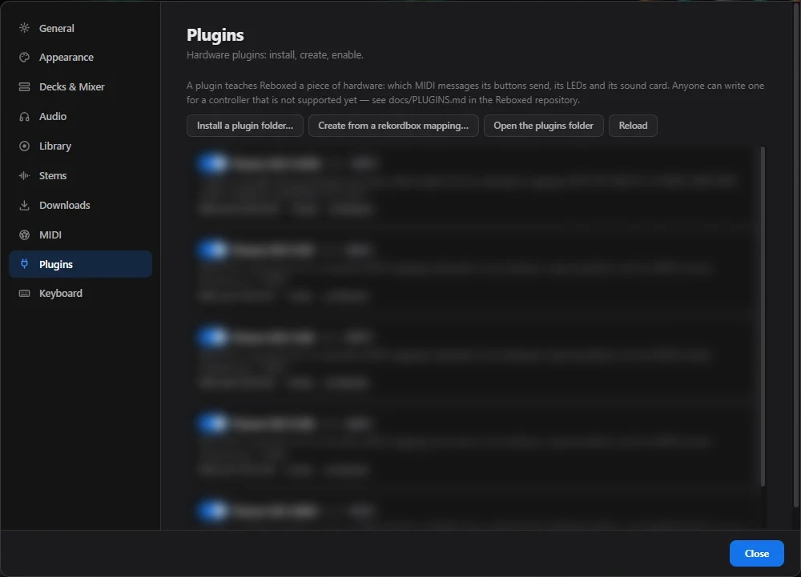

Un fichier, et ton contrôleur parle à Reboxed
- Un plugin dit à Reboxed quels messages MIDI envoient les boutons, potards et jogs, et quelles LED allumer.
- Il marche pour n'importe quelle marque : Hercules, Numark, Reloop, un vieux contrôleur MIDI…
- Reconnu au branchement, activable dans Préférences ▸ Plugins.
- Sans plugin : MIDI learn et raccourcis clavier.
Exemple ci-contre : aucun plugin Hercules n'est fourni pour l'instant, c'est à écrire.
{
"id": "hercules-inpulse-200",
"name": "Hercules DJControl Inpulse 200",
"kind": "controller",
"match": ["Inpulse 200"],
"mapping": "mapping.json",
"decks": 2
}
Ce que rekordbox fait, Reboxed le fait.
Globalement, tout ce que tu as dans rekordbox avec ton matériel, tu l'as aussi dans Reboxed.
💿Jogs
Scratch, pitch bend, vinyl mode.
🟦Pads
Hot cues, beat loop, beat jump, slicer, sampler, key shift, stems.
🎚️Mixer & FX
Faders, EQ, crossfader, Beat FX et Color FX.
💡LED
Les pads et boutons s'allument comme dans rekordbox.
🎧Carte son
La carte son du contrôleur est choisie au branchement : master et casque.
🔌Branche et joue
Le plugin est reconnu tout seul, sans réglage.
Ajoute ton contrôleur.
Décris-le
Un plugin.json et un mapping.json. Déjà un mapping rekordbox (.midi.csv) ? Préférences ▸ Plugins ▸ Create from a rekordbox mapping…
Installe-le
Préférences ▸ Plugins ▸ installer un dossier. Branche : c'est reconnu.
Partage-le
Un dossier à envoyer, ou une contribution sur GitHub pour que tout le monde en profite.
Tout est ouvert
- Le code entier est sur GitHub, sous licence MIT.
- Corrige un bug, ajoute une fonction, adapte un mapping : propose-le.
- Pas de fonction à débloquer, pas de matériel exigé.

Une clé prête pour le club
- Base export.pdb, grilles, hot cues colorées, memory cues, boucles, formes d'onde.
- Réglages des lecteurs et de la table (My Settings).
- Toute la collection ou seulement des playlists. Un export existant est sauvegardé.
Vérifié avec des lecteurs indépendants du format, pas encore sur un vrai lecteur Pioneer.

Ta bibliothèque sur une clé
- La bibliothèque entière peut vivre sur une clé ; les chemins suivent si la lettre change.
- Un outil y déplace toute ta collection, en retrouvant les mêmes morceaux.